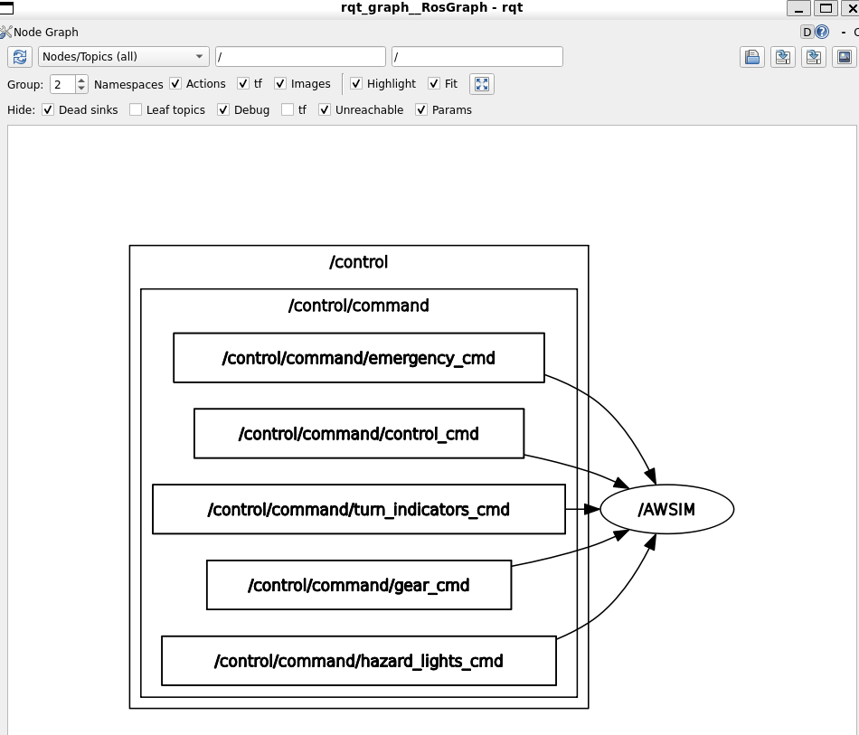
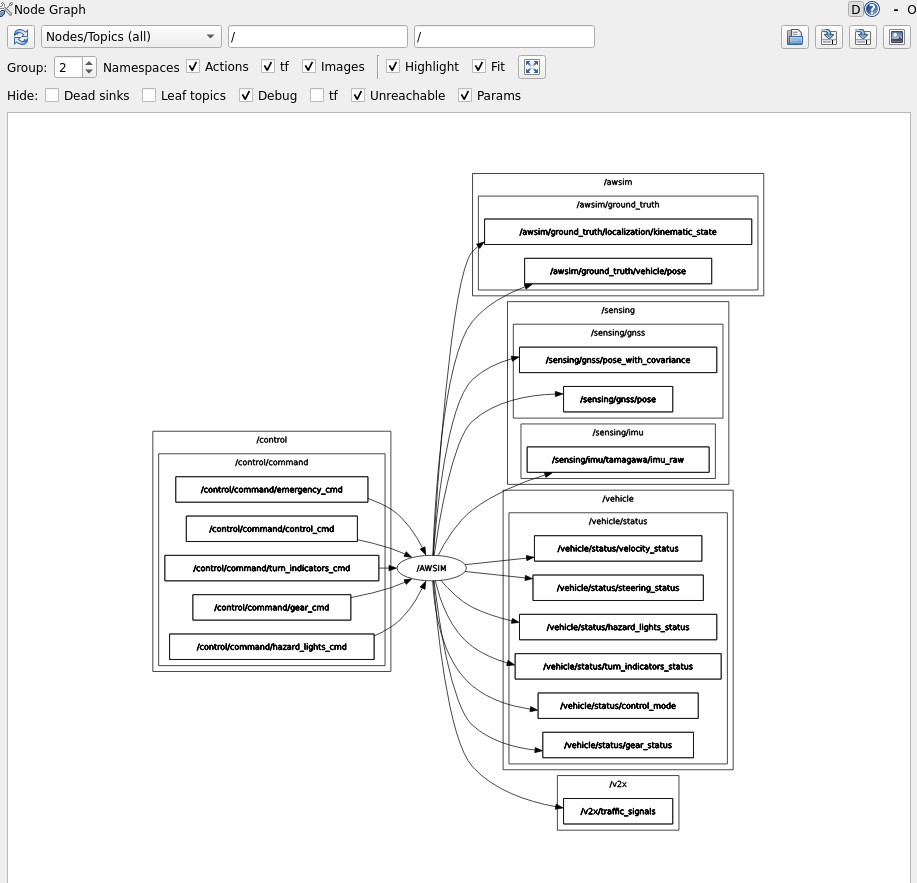
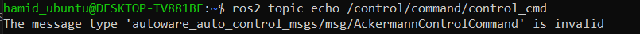
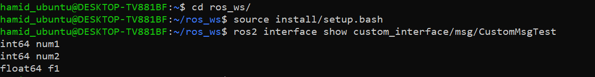
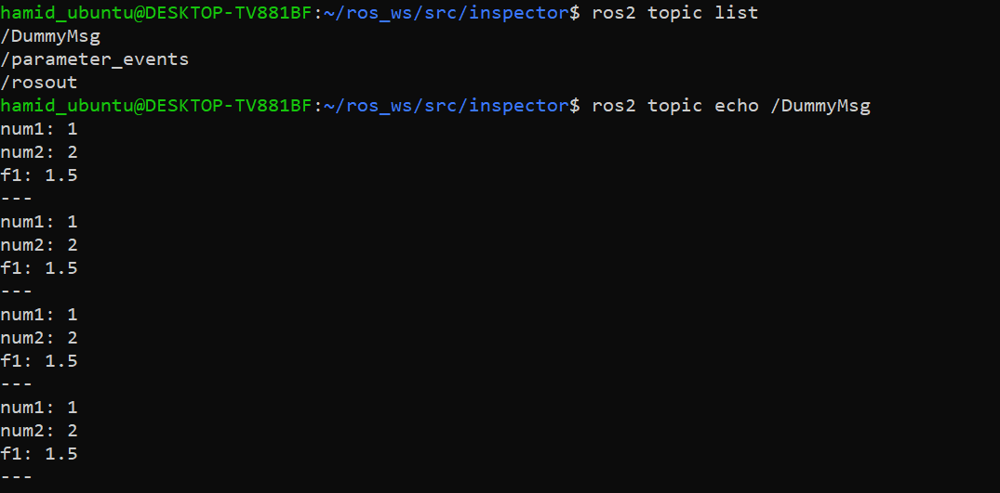
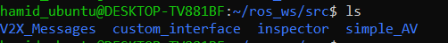
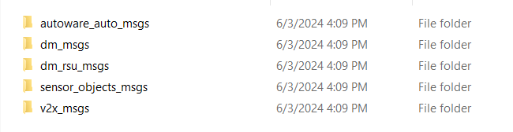

Build AWSIM Messages
Awsim Topics
AWSIM uses topics to send and receive data. It publishes data like position, lidar sensing, vehicle status, and even user-defined data using ROS topics. It also subscribes to topics containing control command data to move the vehicle.
A few of these topics, such as gnss/sensing/pose which determines the exact position of the vehicle, use messages that are already defined in ROS. However, other topics use custom messages that need to be defined to read and use them.
Awsim ROS2 topic lists Shows the full information on these topics and their relation. These topics can be shown on your system using the following process.
Run Awsim and WSL
First, run the Awsim or the built scene of it. You can use this scene. Secondly, Run the WSL and source the ROS2 init using the command below:
source /opt/ros/humble/setup.bash
After sourcing the ROS2 you can get a topic list and see the all the topics that are being published and subscribed by AWSIM.

Topics
The list of Topics above shows all the topics related to Awsim. But, which one of them are being published by Awsim and which ones do the Awsim subscives to. Generally Awsim publishes all of the topics instead the Control command ones. You can see the full relation and published/subscribed topics using the command below.
rqt_graph
After running the command above a new window will appear. In this window unchek the `leaf topics'. As you can see all of the control topics are the ones that Awsim Subscribes to in order to control the vehicle. So by filling and publishing into these topics we can take control of the vehicle displayed in Awsim.

Now, if you uncheck the dead sinks, rqt-graph shows the topics that Awsim publishes.

currently we are unable to access all of the topics and we must define message types of the topics. From the list of topics there are only 5 of the topics that are accessible and we can read them right now.
/awsim/ground_truth/localization/kinematic_state
/awsim/ground_truth/vehicle/pose
/clock
/sensing/gnss/pose
/sensing/gnss/pose_with_covariance

When working with ROS, you may encounter scenarios where some topics are easily accessible while others require additional steps to visualize the messages they publish. This discrepancy often stems from how message types are defined and made available in your ROS 2 environment.
Accessible Topics: For the topics you can successfully echo using the ros2 topic echo command, the message types are already built and recognized by your ROS 2 environment. These message types are typically part of the standard message packages that come pre-built with ROS 2 installations, or they are message types from packages you have already built and sourced in your workspace.
Inaccessible Topics: For the topics that produce errors when you attempt to echo them, the issue usually lies in the message types not being built or not recognized by the current ROS 2 environment. These errors indicate that ROS 2 cannot find the message type definitions required to interpret the messages published on those topics.
So, to resolve this issue and have access to all the Messages from AWSIM we need to build messages.
Build Awsim Messages.
As discussed above, a few Awsim topics are accessible by the default ROS 2 configuration using the std_msgs library. To read/write on other topics, we must define the message type of Awsim in our working package.
Create Custom ROS2 msg
source /opt/ros/humble/setup.bash
cd ros_ws
source install/setup.bash
cd src
Create a new Package
ros2 pkg create --build-type ament_cmake custom_interface
Navigate to the custom_interface package:
cd custom_interface
ls
CMakeLists.txt
include/
package.xml
src/
rmdir src
mkdir msg
custom_interface/msg directory you just created, make a new file called custom_msg_test.msg with one line of code declaring its data structure:
cd msg
touch CustomMsgTest.msg
int64 num1
int64 num2
float64 f1
Modify CMakeList.txt
find_package(ament_cmake REQUIRED)
find_package(rosidl_default_generators REQUIRED)
rosidl_generate_interfaces(${PROJECT_NAME}
"msg/CustomMsgTest.msg"
)
Modify package.xml
<buildtool_depend>rosidl_default_generators</buildtool_depend>
<exec_depend>rosidl_default_runtime</exec_depend>
<member_of_group>rosidl_interface_packages</member_of_group>
Build the cusotm_interface package:
cd ~/ros_ws
colcon build --packages-select cusotm_interface
Now the interfaces will be discoverable by other ROS 2 packages. Now you can confirm that your interface creation worked by using the ros2 interface show command:

Create a simple publisher
cd ~/ros_ws/src/inspector/inspector
touch CustoMsgTester.py
chmod +x CustomMsgTester.py
#!/usr/bin/env python3
import rclpy
from rclpy.node import Node
from custom_interface.msg import CustomMsgTest
class CustomMsgPublisher(Node):
def __init__(self):
super().__init__('MsgPublisher')
self.publisher_ = self.create_publisher(CustomMsgTest, 'DummyMsg', 10)
timer_period = 1
self.timer = self.create_timer(timer_period, self.callback)
def callback(self):
msg = CustomMsgTest()
msg.num1 = 1
msg.num2 = 2
msg.f1 = 1.5
self.publisher_.publish(msg)
def main(args=None):
rclpy.init(args=args)
node = CustomMsgPublisher()
rclpy.spin(node)
node.destroy_node()
rclpy.shutdown()
pass
if __name__ == "__main__":
main()
Add the following to setup.py
entry_points={
'console_scripts': [
'ConnectionControlNode = inspector.ConnectionController:main',
'CustomMsgTesterNode = inspector.CustomMsgTester:main',
],
},
Add the following to package.xml:
<exec_depend>custom_interfaces</exec_depend>
cd ~/ros_ws
colcon build
ros2 run inspector CustomMsgTesterNode

Build Awsim msgs
Download the V2X Messages from the link below.
Place it in the src directory of your workspace.

Insede the V2X Messages folder

Go back to the root of your workspace and build the new package
cd ~/ros_ws
colcon build
After the build is completed use ros2 interface show command to check if the messages have been built correctly. If the messages can be shown it means that the messages are added correctly.
TODOs
- [1] Add the
V2X Messages Link.